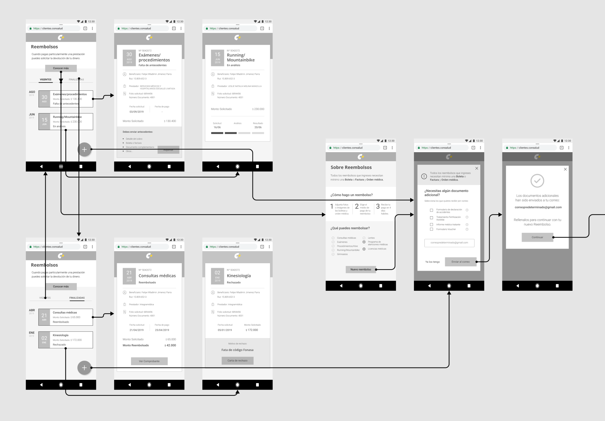
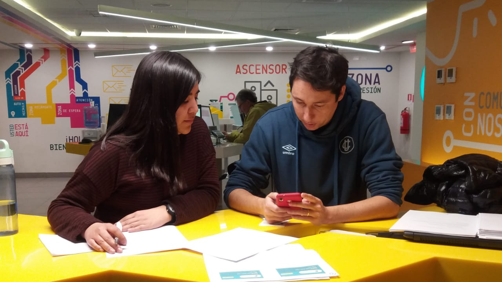
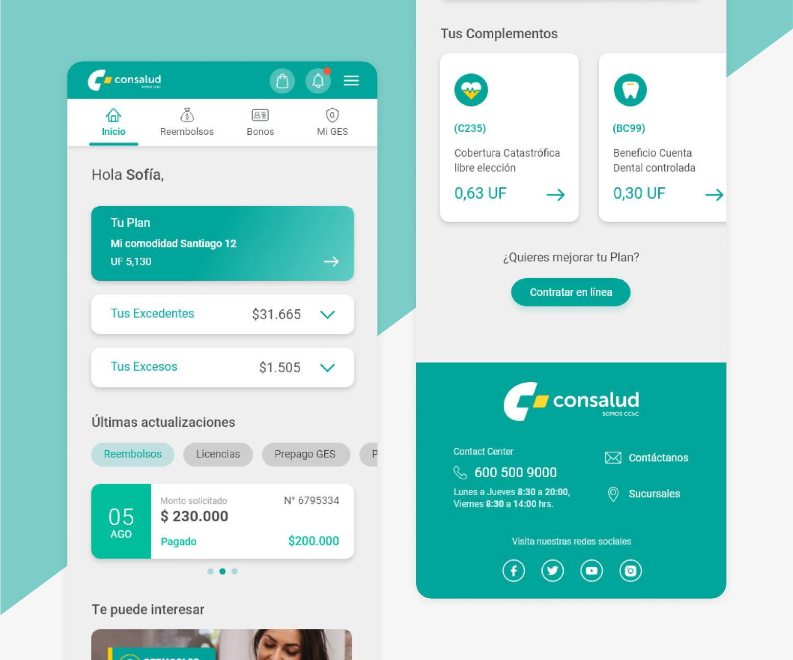
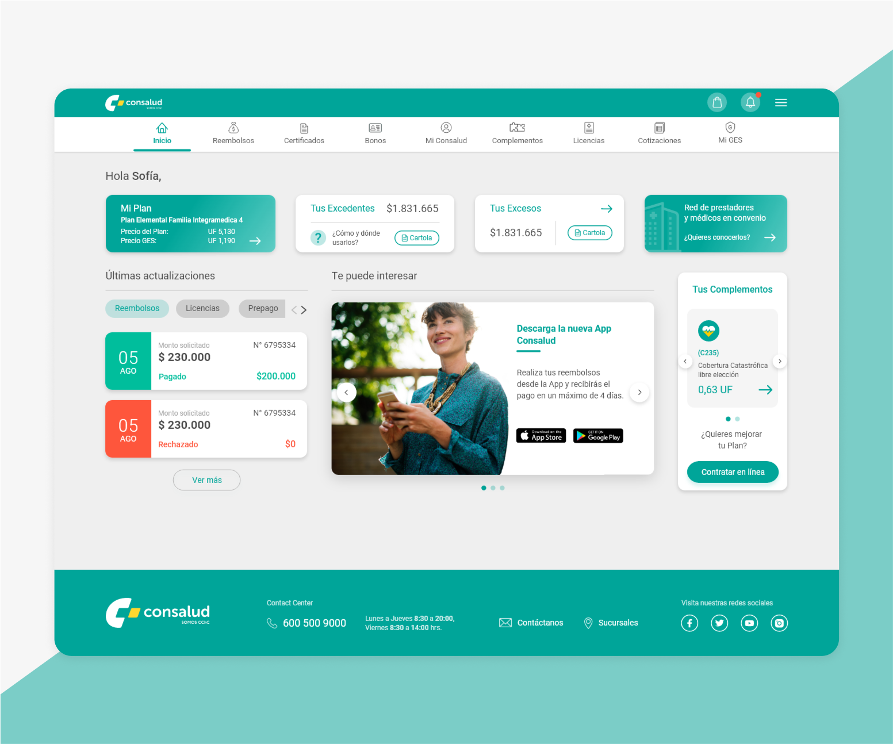
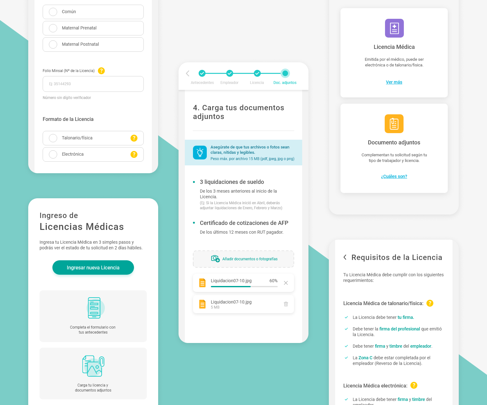
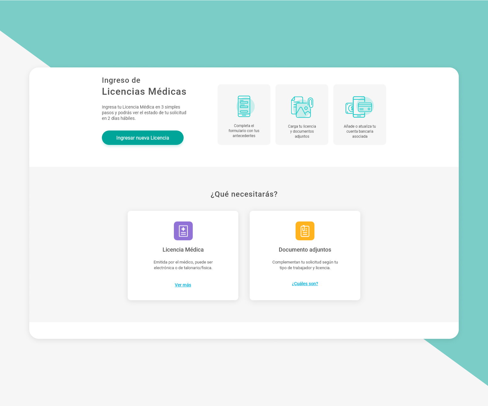
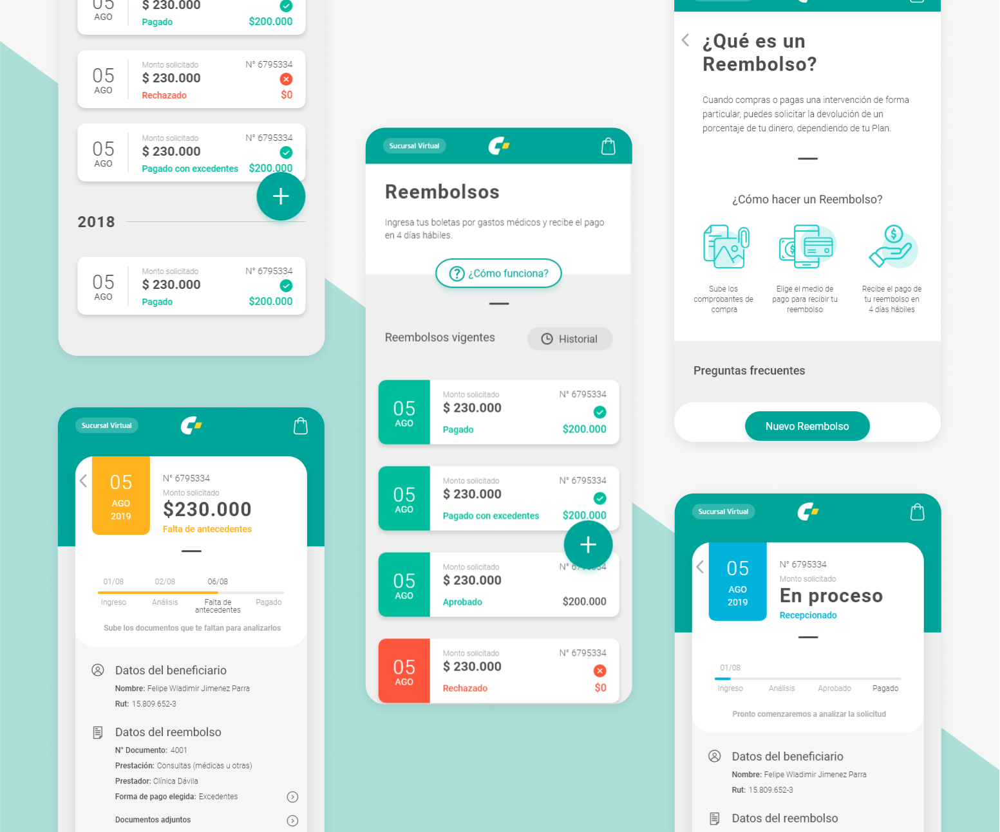
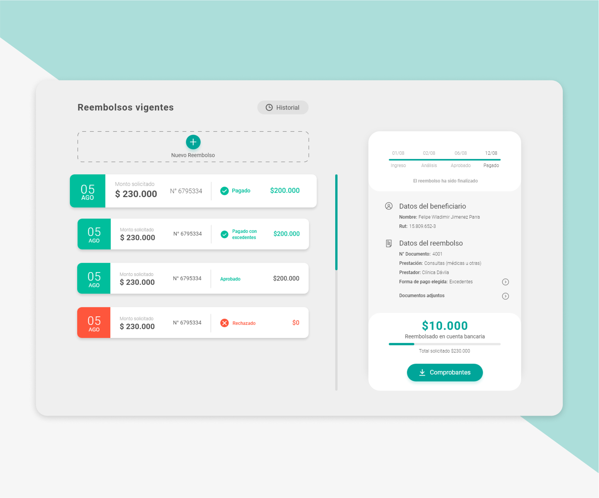
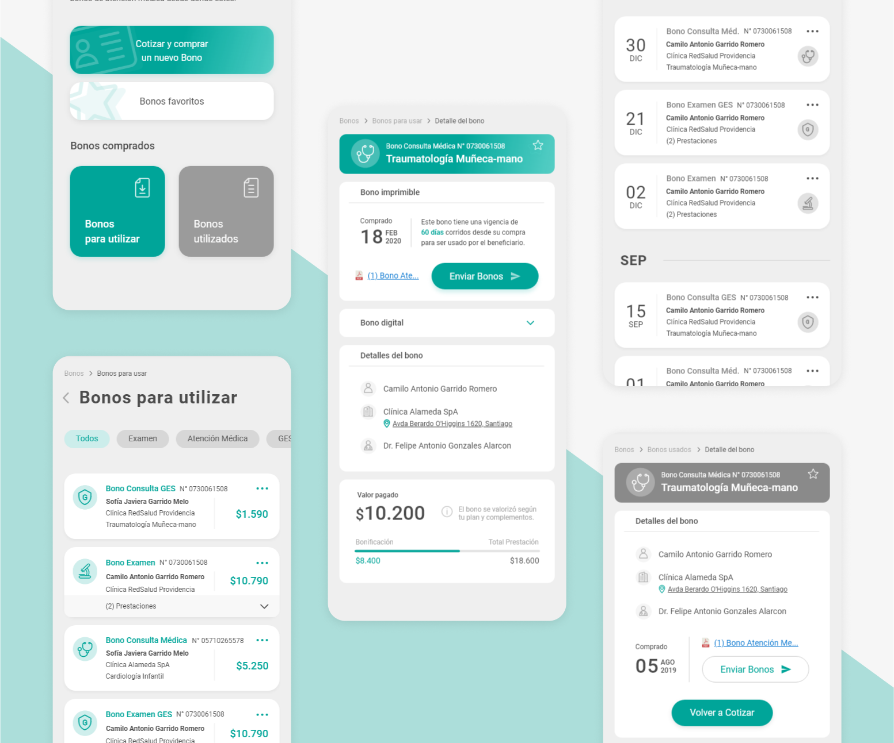
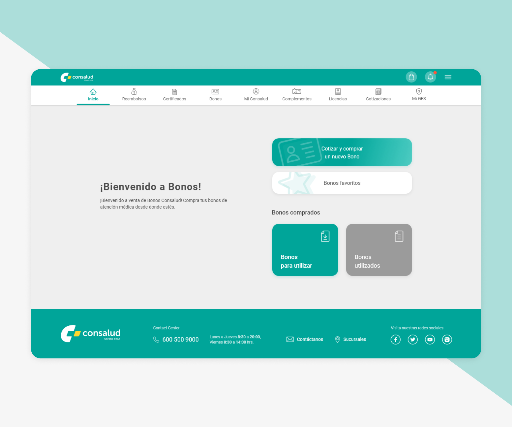

Sucursal Virtual Consalud
Rediseño y nueva experiencia de la Web para afiliados de la Isapre.
IDEACIÓN
Ejercicios de ideación
Moderación de ejercicio Crazy 8 con el equipo de desarrollo, Producto Owner y Diseñadores de otros proyectos.


IDEACIÓN
Sketching de ideas
Parte importante de mi proceso de Diseño es llevar la idea al papel. Este es un método rápido que me permite comunicar las propuestas al equipo, alinearnos e iterar rápidamente.


EXPERIMENTACIÓN
Wireframes y prototipos de Baja fidelidad
Para mi esta etapa es infalible para trabajar en la arquitectura de la información e incorporar el contenido real. Al igual que con los sketches, los wireframe me permiten validar propuestas con áreas del negocio, testear con usuarios en etapa temprana y así realizar las mejoras necesarias antes de pasar a un prototipo de alta fidelidad.


EXPERIMENTACIÓN
Testeo de prototipos
En cada proyecto la validación del cliente es vital. Realicé testeos de usabilidad presenciales y online, cualitativos y cuantitativos con prototipos de baja fidelidad y de alta fidelidad. Otros testeos que realicé: test de 5 segundos, test A/B, Card sorting cerrados, testeo de primer click.



EVOLUCIÓN
Análisis de testeos e iteraciones
Para tomar la decisión de iterar en el Diseño, es importante tener como respaldo los resultados de un testeo. Para bajar la información, la analizo y desarrollo reportes con validación de hipótesis, entregables como un Costumer journey map, o trabajo con herramientas que entreguen resultados cuantitativos como mapas de calor o tasa de missclicks.


RESULTADOS
Prototipos de Alta Fidelidad
Estos son algunos de los prototipos de Alta Fidelidad que desarrollé para distintas áreas, todas son secciones de la nueva Sucursal Virtual de Consalud. Dentro de los proyectos, comencé a trabajar en un Diseño Sistemático (Design System), lo cual me permitió agilizar el desarrollo de estos prototipos.







